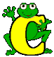

TÉRMINOS DE LA LETRA

- C / C++
- C++ es un lenguaje que abarca tres paradigmas de la programación: la programación estructurada, la programación genérica y la programación orientada a objetos . C++ está considerado por muchos como el lenguaje más potente, debido a que permite trabajar tanto a alto como a bajo nivel.
- Cache
- Copia que mantiene una computadora de las páginas web visitadas últimamente, de forma que si el usuario vuelve a solicitarlas, las mismas son leídas desde el disco duro sin necesidad de tener que conectarse de nuevo a la red; consiguiéndose así una mejora muy apreciable en la velocidad.
- Carpeta
- Espacio del disco duro de una computadora cuya estructura jerárquica en forma de árbol contiene la información almacenada en una computadora, habitualmente en archivos y es identificado mediante un nombre (ej. "Mis documentos"). En las carpetas se puede guardar preferencias del usuario.
- CBR
- Constant Bitrate (Bitrate Constante): Básicamente es un término que describe cómo es codificado el audio y el video, en donde el bitrate no varía a lo largo del clip de audio o video.
- CD
- Compact Disc. Disco Compacto. Disco óptico de 12 cm de diámetro para almacenamiento binario. Su capacidad es de aprox 750 mb y puede ser usado para almacenar cualquier tipo de data, desde música, videos, divx, mp3, archivos en general, etc.
- CD-ROM
- Compact Disc Read only memory es un medio de almacenamiento de sólo lectura.
- CD-RW
- El Compact Disc regrabable es un CD que ofrece la posibilidad de grabar y borrar información hasta 1,000 veces.
- CERN
- Conseil Europeen pour la Recherche Nucleaire. Laboratorio Europeo de Física de Partículas, en Génova, Suiza. Fue donde nació el world wide web en 1991, basado en la propuesta de Tim Berners-Lee. http://www.cern.ch
- Certificado Digital
- Acreditación emitida por una entidad o un particular debidamente autorizada garantizando que un determinado dato (una firma electrónica o una clave pública) pertenece realmente a quien se supone. Por ejemplo, Verisign y Thawte
- CGA
- Color Graphics Adapter. Una de las primeras tarjetas gráficas existentes para IBM y compatibles. Permitía resoluciones de 320x200 puntos con 4 colores y de 640x200 puntos en 2 colores. En la actualidad ya no se usan.